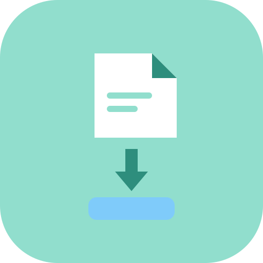

Breviora — набор приложений из каталога МойСклад. Подписанные УПД сами превращаются в приёмки, отгрузки уходят в Диадок на подпись, книги покупок и продаж формируются в Excel одним нажатием.
Установка в один клик из каталога. Пробный период — 14 дней.
Документы ЭДО, форматы маркетплейсов и налоговые регистры можно доверить автоматике — и заниматься делом.
Поставщик прислал подписанный УПД в Диадок — и его нужно вручную забивать в МойСклад как приёмку. Каждая позиция, количество, цена, НДС.
Отгрузку оформили в МойСклад, а УПД для контрагента формируют отдельно — вручную или в сторонней программе, с риском расхождений.
Для Озон нужен XML определённого вида. Переделывать документ под каждый канал — отдельная рутина и источник ошибок.
Перед декларацией данные по НДС приходится собирать в таблицу: копировать счета-фактуры, проверять контрагентов и исключения. Часы работы каждый квартал.
Устанавливайте только то, что нужно. Каждое приложение работает отдельно в каталоге МойСклад.

Забирает подписанные входящие УПД из Диадока и создаёт приёмки в МойСклад. Организация и контрагент подбираются по ИНН, позиции — по артикулу.
Формирует стандартный УПД из отгрузки МойСклад и отправляет его в Диадок как черновик на подпись.
Создаёт XML в формате Озон для отгрузки и прикрепляет файл к документу в МойСклад.
Формирует книги покупок и продаж в Excel по данным МойСклад — отгрузкам, розничным продажам, приёмкам и заказам поставщикам. Исключённые контрагенты настраиваются заранее.
Откройте раздел «Решения» в МойСклад, найдите Breviora и нажмите «Установить». Подтвердите доступ к аккаунту.
В настройках приложения выберите организацию, склад или контрагентов. Приложениям для Диадока нужен один вход в аккаунт Диадока.
Кнопки появляются прямо в разделах МойСклад — в меню «Решения» и «ЭДО». Нажимайте — остальное приложение делает само.
Оплата — через биллинг МойСклад. Пробный период 14 дней на каждое приложение.
Входящие УПД → приёмки автоматически.
Отгрузки → УПД в Диадок на подпись.
Отгрузки → XML в формате Озон.
Данные МойСклад → книги в Excel.
Цены предварительные и могут быть скорректированы до публикации в каталоге.
Установите нужное приложение и проверьте его на своих данных в течение 14 дней — бесплатно.
Установить из каталога